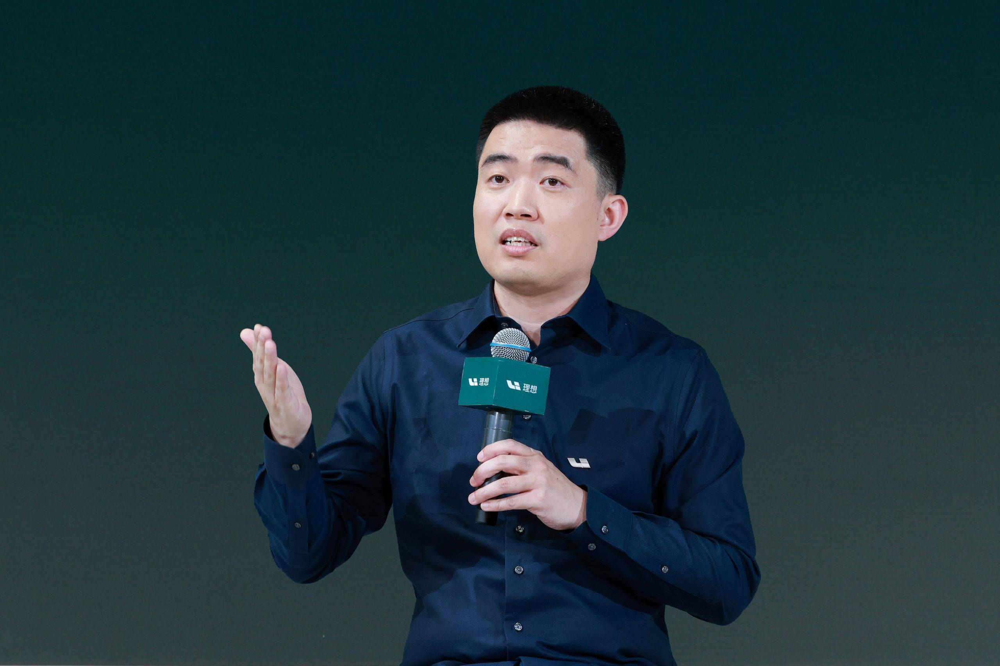

王兴和李想私下里经常推荐的一本书。
《高效能人士的七个习惯》这本书的价值，仍然是被低估的。
我印象中，美团的王兴、理想汽车的李想，还有水滴的沈鹏，都曾在不同场合推荐过这本书。
李想曾经说过，这是他在过去创业和生活的二十多年里，遇到的一本最好的系统和教程。
今天飞深圳，在路上打开微信读书，偶然翻到了之前收藏的一篇文章，是李想早年在理想汽车内部讲《高效能人士的七个习惯》的培训稿。
又从头到尾认真读了一遍，虽然已经工作了十年多，但收获仍然还是非常大。
这本书讲的道理看起来都很简单，但真正理解，并且在工作和生活中用起来，其实挺难的。
整理了一些笔记，分享给大家。
1、我们每天都会关注很多问题，比如今天天气如何，上班路上是否堵车，老板会不会给我涨薪，某个工作该怎么做，房价会不会跌，董宇辉的直播怎么看的人少了。
这些问题中，有些自己可以掌控，有些则无能为力。
如果一个人总把焦点放在那些无能为力的事情上，那久而久之，他会变得消极，凡事喜欢上纲上线，争论一些自己根本没有办法改变的事情。
2、积极主动的人心里清楚，应该把精力放在那些自己能够改变或者影响的事情上。总盯着无能为力的事，比如别人的缺点，或者大环境的问题，那只能让自己越来越消极。
永远把 80% 的精力着眼于自己能够控制和影响的事情上。这样，随着能量的增强，你的影响圈也会越来越大，能够改变的事情也会越来越多。
3、如果我们长期关注那些我们影响不了的事情，那自身的气场、能量会不断缩小；反之，改变自己，积极主动，那做事的能量便会不断增强。
这个思维方式对我的影响是决定性的。我觉得强者和弱者的区别也在这里。
4、《高效能人士的七个习惯》其实是一套完整的个人成长系统。前三个习惯，主动积极、以终为始、要事第一，帮助一个人从依赖走向独立。
接下来三个习惯，双赢思维、知彼解己、统合综效，帮助一个独立的人学会与他人合作。
最后一个习惯，不断更新，让自己能够持续成长。这七个习惯是有先后关系的，一个人只有先做好自己，才有能力与别人建立真正良好的合作关系。
5、一个人是否成年，和年龄没有太大关系。真正的成年人，能够主动做选择，愿意为自己的选择承担责任，而且能够不断地问自己，眼下最重要的事情是什么。
很多人虽然已经工作多年，但依然习惯于等别人安排任务，遇到问题就找外部原因，也不愿意为结果负责。这样的人即使年龄再大，也很难真正独立。
6、主动积极，首先意味着我们有选择如何回应一件事情的权利。
比如看到马云很成功，有人会觉得，他家里一定有背景，所以才能成功。也有人会主动研究他的产品、经营方式，以及他为什么能够把企业做得这么成功。
同样一件事情，前一种反应只会让自己更加消极，后一种反应却可能带来新的知识和经验。
7、人与人之间的差距，很多时候就是这样慢慢拉开的。
在汽车之家，曾经有不少刚毕业的大学生，起点差不多，但工作三年之后，主动积极的人和消极被动的人，在个人能力和产能上可能相差十倍。
因为遇到困难时，积极的人会想办法解决，每解决一个问题，就积累一次经验。
而消极的人习惯于回避问题，认为这件事跟自己没关系。三年下来，两个人积累的经验和能力自然完全不同。
8、主动积极还有一个重要的表现，就是能够控制自己对外界的反应。
2019 年，有媒体批评理想汽车工厂没有建好，杂草丛生，无法按时投产。
面对这样的报道，理想汽车没有选择反击，而是解释工厂的实际情况，承诺及时清理杂草，并向对方提供建设进展，最后还邀请这位媒体朋友参加试驾。
很多时候，别人的行为我们无法控制，但可以选择如何回应。不同的回应方式，往往会让事情走向完全不同的结果。
9、以终为始，就是一个人需要有自己的长期使命和愿景。使命是你为什么而活，愿景是你希望这一辈子成为怎样的人。
它们就像一部人生的宪法，能够帮助你做出重要决定。否则，一个人很容易被外界的评价、要求和各种短期利益牵着走，忙忙碌碌很多年，最后却发现自己根本不知道想要什么。
10、怎么找到自己的使命？有一个很实用的方法，就是先把自己在人生中扮演的不同角色列出来。
比如在公司是管理者，在家里是父亲、丈夫、儿子。然后分别思考，未来五到十年，希望自己成为怎样的管理者，怎么样的父亲和丈夫。
只有把这些问题想清楚，才能知道今天应该把时间花在哪里。
11、很多人觉得工作太忙，没办法照顾家庭。但高质量的陪伴，本身就是需要主动安排的事情。
比如每周只有一天能够陪伴家人，那就应该提前想好带孩子去哪里玩，和妻子去哪里吃饭，每年什么时候安排一次家庭旅行。
如果每次都等家人问起来，才用一句随便应付过去，那家庭生活的质量自然很难提高。真正重要的事情，应该提前进入自己的日程。
12、要事第一，核心是找到真正重要的事情，然后把时间和精力集中在上面。
比如一个 CEO，每天可能有十五件事情需要处理，但真正安排的只有三件，而且这三件事必须和周计划、月计划、年计划有关。
因为在实际工作中，头部 10%的重要事情，往往决定了大部分结果。
一个人每天做了多少事情，并不能说明他有多高效，更重要的是，他有没有把最重要的事情做好。
13、什么事情最重要，取决于你当前的角色和所处的阶段。
比如一家公司即将完成产品研发，准备进入下一个发展阶段，此时 CEO 最重要的职责可能就是组织建设。
如果每天忙着做销售、参加各种会议，看起来非常勤奋，但公司的组织能力始终没有建立起来，那就是没有抓住要事。
所以，做好时间管理，还有一个非常重要的能力，就是知道哪些事情可以不做。
14、双赢思维的基础，是尊重别人和自己不一样，也尊重自己和别人不一样。
不断在所有人际关系中寻求互惠互利的一种思维和情感模式。
没有格局和胸怀是根本不可能达成合作的，你要敢于接受别人的不一样。
人与人之间的差异，本身就可能创造价值。
如果一个人永远要求别人和自己保持一致，就很难找到真正能够互补的合作伙伴。
15、我觉得吧，《高效能人士的七个习惯》很大程度上说的就是一个人的思维方式。什么是思维方式，其实就是我们遇到事情时的应激反应机制。
而思维方式，是可以刻意练习和调整的。
